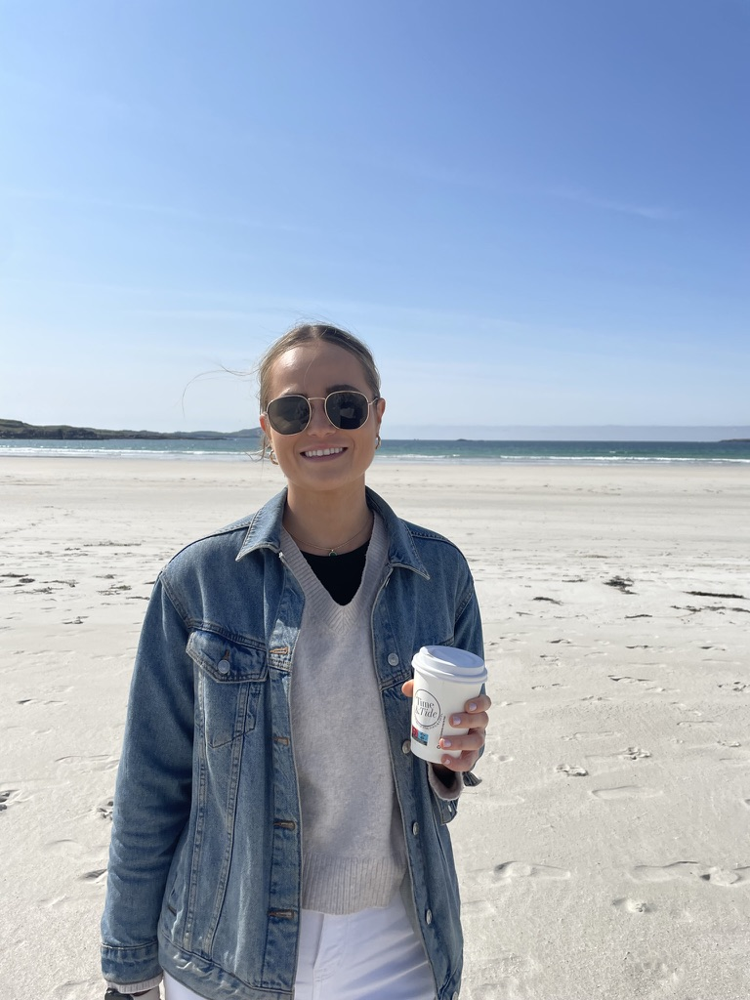

About Me
I am currently a Data Engineer at Options IT, where I leverage Python and REST APIs to automate processes, streamline workflows, and extract actionable insights from large datasets. My work involves managing and analyzing extensive data pipelines across platforms like Splunk, MongoDB, and Azure to ensure efficient and reliable data operations.
As part of my professional growth, I have recently started exploring web development and am excited to apply these skills to innovative new projects.
This portfolio showcases my journey, highlighting my expertise in data analysis, data engineering, and handling complex datasets. Feel free to explore, and don’t hesitate to reach out if you’re interested in collaborating!
A little about me:
- üå± Eager Learner: I‚Äôm always excited to dive into new technologies and expand my knowledge.
- ü§ù Team Player: I thrive in collaborative environments and love working and learning alongside others.
- üí° Problem Solver: I‚Äôm passionate about tackling complex challenges and creating efficient, innovative solutions.

Portfolio
Here are some of my recent projects:
My Projects
COVID Analysis Project Using Pandas In Python: Highest Cases
ETL Process for Atlas - Global Monitoring Tool
Switch logs are sent using syslog-ng to various nodes in the cluster, depending on their region. A custom app is deigned to collect the logs by monitoring the directory. This data is needed in real time so I cannot use batch processing to stream the data . In this case, I need to think about resourcing issues, such as the directories filling up and causing disk issues. A line is added into the stanza within the app to remove the record once it has been ingested.
Once ingested into Splunk, I transform the logs by ingesting them via their event time, ensuring each log has an event time, cleaning the data (checking for null and duplicate values/ inconsistent data).
I make sure each log is collected and converted into a UTC time format.
Why was this important for this project?
The syslog boxes (where the data is collected from) are all in different time zones - converting them into a universal time format keeps the time format standardised.
Using a python script, I connect into Splunk using the Splunk API, transform the data further using Pandas and send the data to MongoDB where the centralised database can be kept updated with the latest disruptions.
This data is then visualised and hosted on our company website.
Contact
Feel free to reach out to me at emglade98@gmail.com.
Download My CV
Interested in learning more about my experience? Click the button below to download my CV.
Download CV